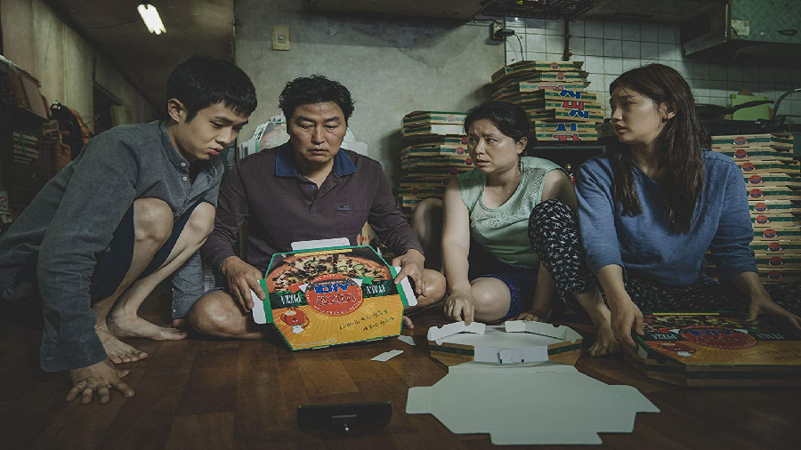

| Parasite – Ký sinh trùng
Vị trí đừng đầu trong Top phim năm 2019 chắc chắn phải là Parasite – Ký sinh trùng. Thật kỳ lạ khi một tác phẩm điện ảnh của Hàn Quốc lại có thể đánh bại được đế chế điện ảnh Mỹ để nằm ở vị trí cao nhất này các bạn hen. Nếu như còn thắc mắc về câu hỏi trên thì các bạn hãy xem ngay phim đi bởi vì khi credit phim chạy lên, bạn sẽ gật gù đồng tình với Ghiền review ấy. Cách dựng phim thông minh, tình tiết lắt léo và gây shock cho người xem dù câu chuyện phim nó rất bình thường, gần gũi với chúng ta. Lý do mình đưa phim vào danh sách này là bởi vì những hàm ý sâu xa mà đạo diễn Joon-ho Bong cài cắm trong phim, đến nỗi mà Ghiền review phải có một bài giải thích rất dài về phim í. Mình tin rằng phim này sẽ ẵm giải Oscar cho phim nói tiếng nước ngoài hay nhất năm 2019 |
|  |